<!doctype html>
<html lang="en"><meta charset="utf-8"><meta name="viewport" content="width=device-width, initial-scale=1"><title>phpont profile SVG diagnostics</title>
<style>*{box-sizing:border-box}body{margin:0;font:14px/1.45 system-ui,sans-serif;background:#0d1117;color:#c9d1d9}.light{background:#fff;color:#24292f}section{padding:28px}.wrap{max-width:976px;margin:auto}h1{font-size:20px;margin:0 0 16px}h2{font-size:15px;margin:28px 0 10px}.grid{display:grid;grid-template-columns:1fr 1fr;gap:20px}figure{margin:0}figcaption{font-weight:600;margin:0 0 8px}img{display:block;width:100%;height:auto;border-radius:8px}.narrow{max-width:390px}</style>
<section><div class="wrap"><h1>Animated dark</h1><div class="narrow"><h2>Reduced width</h2></div></div></section>
<section class="light"><div class="wrap"><h1>Animated light</h1><div class="narrow"><h2>Reduced width</h2></div></div></section>
<section><div class="wrap"><h1>Static dark / light</h1><div class="grid"><figure><figcaption>Static dark</figcaption></figure><figure><figcaption>Static light</figcaption></figure></div></div></section>
<section class="light"><div class="wrap"><h1>Compatibility probe</h1></div></section>
</html>
